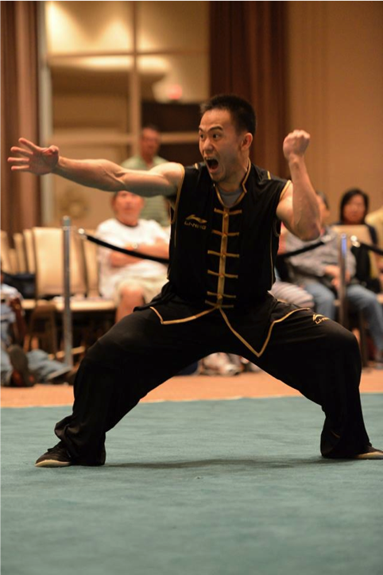

UMBC Wushu
Schedule
Modern Wushu practices run between 7:00 PM and 9:00 PM on Mondays and Wednesdays in the RAC backetball courts.
Traditional practices are held between 7:00 PM and 9:00 PM on Tuesdays and Thursdays, also in the RAC backetball courts.
Officers
President: Andrew Hacklander
Vice President: Thomas Burnett
Secretary: Irene Javier
Treasurer: Kwynn Johnson
Historian: Shirley Lu
Webmaster: Chris Hamer
Coaches

Status: Current UMBC Wushu Coach, actively training
Specialized in: Changquan (long fist), gunshu (staff), daoshu (broadsword), shuangdao (double broadsword)
Cameron Mozafari

Status: The Founder of UMBC Wushu, Former UMBC Wushu Coach, retired athlete, injured (practicing), returning coach
Specialized in: Changquan (long fist), gunshu (staff), daoshu (broadsword), tongbeiquan (through-the-back fist), pudao (horse cutter)
Mikey Tsai

Status: Former assistant coach, practicing, returning coach
Specialized in: Changquan (long fist), gunshu (staff), daoshu (broadsword), jiujiebian (nine-section whip)
Mac Colestock
Status: Current Chen Style Taiji Instructor, actively training, probably a wizard
Specialized in: Chen Style Taiji, Yang Style Taiji, Push Hands, Qigong, Northern Shaolin, contemporary Wushu
Previous Coaches
Jason Liu

Status: Former UMBC Wushu Coach, veteran athlete, actively training, Sanshou Guest Coach
Specialized in: Nanquan (southern fist), Nangun (southern staff), Nandao (southern broadsword), Sanshou (sparring)
Tim Wang

Status: Co-founder of UMBC Wushu, Former UMBC Wushu Coach
Specialized in: Changquan (long fist), gunshu (staff), daoshu (broadsword), jiujiebian (nine-section whip)
Dennis Shyu
Status: Former UMBC Wushu Coach, retired and veteran athlete, injured
Specialized in: Nanquan (southern fist), gunshu (staff), daoshu (broadsword)
Ching-yin "Bee" Lee

Status: Former UMBC Wushu Coach
Specialized in: Nanquan (southern fist), Nangun (southern staff), Nandao (southern broadsword), kickboxing
Gallery


FAQ
Wushu (武术； wǔshù) literally means, “martial art” (武； martial, 术； method/art)， and is used as an umbrella term to encompass all the various Chinese martial arts. When people say Wushu, they specifically mean modern/contemporary Wushu, a standardized way of teaching Chinese martial arts for sport and competitive purposes. Modern Wushu is divided into two disciplines; taolu (套路； tàolù)，the practice of forms and sequences, and Sanshou (散手； sànshǒu)， the practice of freestyle sparring and scientific martial applications.
So what’s the difference between Wushu and Kung Fu?
Wushu is actually the generic term for ALL Chinese martial arts, but when people say Wushu, they usually refer to modern/sport Wushu. "Kung fu" （功夫；gōngfu） in Chinese means "skill/effort", and is the concept of attained skill through hard work, but it's been mistranslated worldwide as the name of Chinese martial arts. Modern Wushu is a standardized sport for competition, derived from the more traditional "kung fu", which is more focused on inner development and self-defense.
What is the difference between Wushu and Taekwondo (and/or Karate)?
Wushu is indigenous to China, whereas Taekwondo is a contemporary standardization of Korean martial arts, and Karate was developed from the Okinawan Islands of Japan. In terms of forms work, Chinese martial arts are generally characterized with more complex, fluid and continuous movements, as opposed to the more concise and rigid, “one-two” rhythm of Karate and Taekwondo movements.
What should I bring/wear to practices?
Please come dressed in nonrestrictive clothing (sweatpants, etc.), as Wushu, like any other form of martial art, is a physically demanding activity. For those planning on practicing regularly, see the officers about buying the standard Feiyue Wushu shoes required for training. REQUIRED EQUIPMENT (for Sanshou practices): From the start of Sanshou practices, EVERYONE is required to have:
Handwraps – 180" is recommended for standard adult size, unless other members require certain lengths depending on their hands/wrist girth
(Boxing) training gloves – 12 oz. is the recommended number, but if members already have their own gloves, then that's fine too.
What kinds of styles/forms can you learn in Wushu?
Because Wushu is a general term for all Chinese martial arts, many styles exist, including ones that even the greatest masters have never heard/known of, and those that have been unfortunately lost or forgotten due to the sacking of historical literature and materials.
All beginners start off learning basic Changquan (长拳；chángquán， long fist)，the standard/“main” style of modern Wushu, which is characterized by extended, plain postures, and is derived from northern styles of Chinese martial arts. After members advance through the first tier of our curriculum (beginner Changquan routine, beginner staff routine, and 1 beginner short weapon form of your choice), choices are available to specialize in specific styles:
Changquan (continued) – more complex, fluid and continuous movements with more emphasis on aesthetics for performance and competition.
Nanquan (南拳；nánquán， southern fist) – style of modern Wushu derived from southern styles of Chinese martial arts, characterized by more compact, “hard” techniques, and shouts.
Taijiquan (太极拳；tàijíquán) – better known as Taichi, an “internal” style of Wushu, characterized by more meditative focus with more “soft”, subtle body mechanics.
Advanced practitioners will learn an additional “traditional” Wushu style/form of their choice, based on the standardization of modern Wushu forms.
UMBC Wushu also offers the opportunity to learn Chen Style Taijiquan as a facet of traditional Chinese martial arts. This is separate from modern Wushu practices, to encourage more all-around understanding of CMA, and is open to all members regardless of Wushu or Taichi experience.
Do you have to pay to be in the UMBC Wushu Club?
Nope! There is no tuition fee; all members are free to join and practice of their volition! HOWEVER, we DO recommend the purchase of equipment for regular training. As members advance in their practices, further equipment will be required for personal use (weapons for advanced forms work, sparring gear for Sanshou). All equipment purchases can be made either through the club or by your own discretion (please see the club officers and/or president for purchasing options).
What exactly do you learn in Sanshou (sparring)?
Chinese Sanshou is the idea of applying and adapting ideas of Chinese martial arts in a sparring/free fighting environment. Fighting techniques are divided into four general elements of fighting, as covered in Chinese martial arts training: kicking (踢；tī)， punching (打；dǎ)， takedowns (摔；shuāi)， and grappling (拿；ná)。 Sport Sanshou is comprised of simple yet efficient kicks, punches, and takedowns to be used in full-contact. However, our Wushu/Sanshou coach also includes the practice of grappling, as well as training with more of an emphasis on self-defense/street fighting situations.
Do you already have to be a Wushu/Taichi member to join Sanshou practices?
Not at all! Our Wushu/Sanshou coach encourages an “open policy” for Sanshou practices, meaning anyone, regardless of martial arts background or experience, can join! This is to encourage the promotion and better development of real martial arts in general.
Where/When does UMBC Wushu practice?
Our practice schedule is dependent on RAC‘s staff distribution of reserved time and space. Per notice and information given to the club president and officers, we will have a consistent schedule of “official” practices throughout the semester, as well as additional “unofficial” practices managed personally by the coach. If you are late or have trouble finding us, contact the club president, officers, or the coach by cell.
Why learn contemporary Wushu when I can study traditional?
Contemporary Wushu was created by traditional Chinese martial arts masters themselves, with the goal of being able to share and teach to the masses. Traditional Chinese martial arts, while very in-depth, is very complex and takes a long time to learn, as opposed to contemporary Wushu which has a simplified yet clear and standard way of teaching. Here at UMBC Wushu, our Wushu coach teaches “modern with a traditional emphasis”, meaning that we use the standard teaching material of modern Wushu, while at the same time sharing some knowledge of traditional principles behind the original movements at the basic level (explanation of body mechanics, martial ideas and applications, etc.).
Contact
Facebook: https://www.facebook.com/groups/umbcwushu/
Email: wushu@umbc.edu